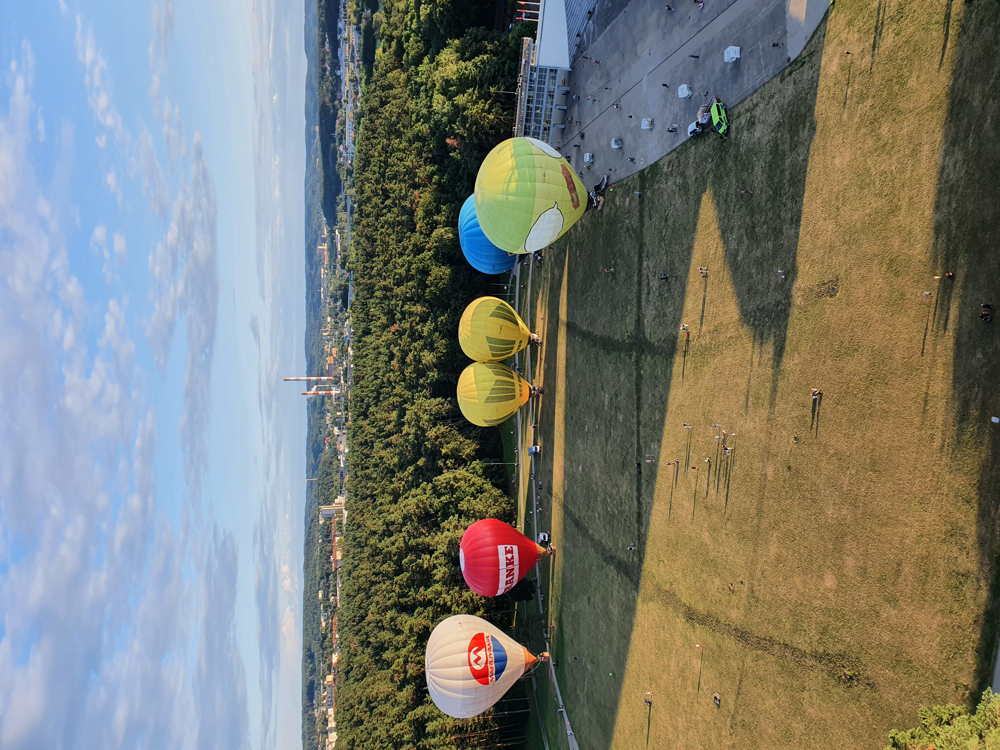
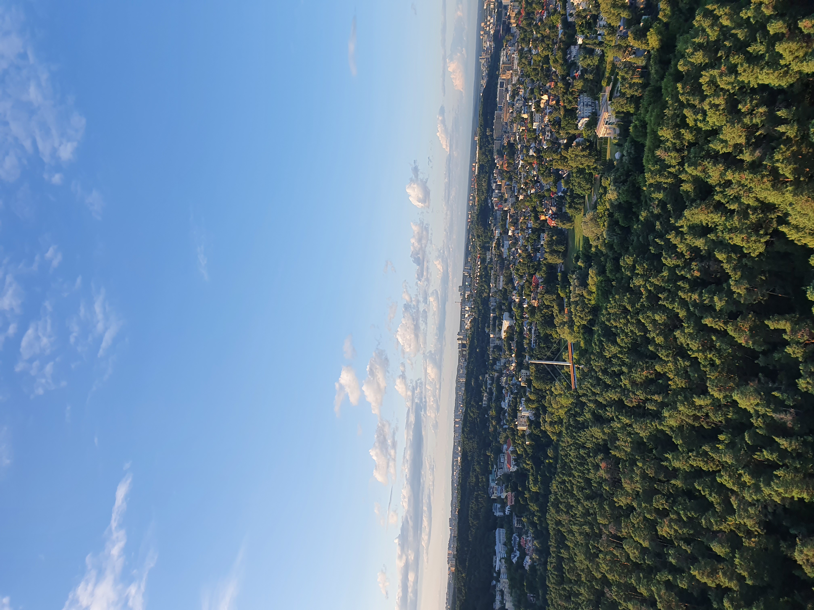

Paieškos
Kai manęs paklausia,kas man labiausiai patinka,drąsiai galiu pasakyti,kad tai yra paieškos metalo detektoriumi. Šis pomėgis mano gyvenime atsirado pirmojo karantino metu,tad liūdėti ar pulti į depresiją laiko man nebuvo. Iš pirmo žvilgsnio ši veikla asocijuojasi su purvu,smėliu ir šiukšlėmis,tačiau realybė yra visai kitokia. Taip, purvo namo tikrai parnešu nemažai,dėl ko mano antra pusė labai pyksta,bet visi radiniai yra to verti. Labiausiai mėgstu šį užsiėmimą dėl to, kad galiu visiškai atsipalaiduoti, atsiriboti nuo darbo ir rūpesčių, pabūti pats su savimi ir savo mintimis. Be to, tai puikus būdas būti fiziškai aktyviu. Labai džiaugiuosi,kad gyvenime vis dar atrandu naujas mėgstamas veiklas.
Kelionės
Turiu nemažai mėgstamų veiklų ir užsiėmimų,bet labai noriu išskirti savo aistrą kelionėms. Nuo pat vaikystės labai daug keliaudavau (žinoma,kartu su šeima), aplankiau daugybę šalių ir vietų,kurios yra tikra vaikų svajonė - Disneyland’as, Heide parkas ir daug kitų. Augant,tų kelionių apmažėjo, o pradėjus dirbti išvis pamiršau ką reiškia atostogos. Labai gaila, kad ne tik darbas,bet ir pasaulyje susiklosčiusi situacija viską apsuko 180 laipsnių kampu, ir kelionių mano gyvenime dar labiau sumažėjo. Vis dėl to,meilė ir aistra kelionėms nedingo,noras pamatyti naujas vietas ir gražius vaizdus nugalėjo tam tikrus principus, tad pagaliau, po didelės pertraukos vėl vyksiu į kelionę. Šį kartą ne su šeima,ne su draugais ar giminėmis,o su antra puse. Kelionė nusimato tikrai labai įdomi,nes vyksime į šalį,apie kurią žinome turbūt mažiausiai - Tunisą. Tikiu,kad atsivešiu daug nuostabių prisiminimų ir patirčių,na,o tuo pačiu ir santykius patikrinsime,nes tai bus pirmoji mūsų kelionė kartu į užsienį.
Baimės
Turiu daug pomėgių,tad išskirti kelis man patinkančius dalykus yra labai sunku. Šį kartą išskirti noriu savo norą nugalėti baimes. Taip,esu vyras,bet aš vis dar turiu baimių. Tačiau tas baimes dažnai reikia nugalėti. Taip nutiko ir praeitą vasarą. Turiu didžiulę baimę aukščiui. Ir aš neperdedu. Aš labaaaai bijau aukščio. Nutiko taip,kad mano antra pusė yra labiau ekstremali ir visada svajojo skristi oro balionu,tad aš,kaip nuostabus vaikinas,nusprendžiau išpildyti jos svajonę. Bet juk viena ji neskris 🙂 Taip ir atėjo ta diena,kai nugalėjau savo baimę aukščiui. Dabar skrydis oro balionu yra man labai patinkantis laisvalaikio praleidimas. Įspūdžiai tik patys geriausi,o vaizdai,kuriuos mačiau, iki šiol liko mano galvoje. Dabar drąsiai galiu teigti,kad man patinka nugalėti savo baimes.
 